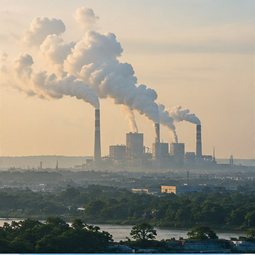

Pembakaran bahan bakar fosil
Pembangkit listrik, kendaraan, dan penggunaan energi di bangunan membakar batu bara, minyak, atau gas yang melepaskan CO₂.
Perubahan iklim modern terutama didorong oleh emisi gas rumah kaca dari kegiatan manusia. Jejak karbon membantu kita memahami sebagian emisi yang berkaitan dengan aktivitas dan konsumsi.

Pembangkit listrik, kendaraan, dan penggunaan energi di bangunan membakar batu bara, minyak, atau gas yang melepaskan CO₂.
Produksi semen, baja, barang konsumsi, dan proses industri lainnya dapat menghasilkan emisi dari energi maupun proses kimia.
Perjalanan kendaraan berbahan bakar fosil menghasilkan emisi. Jarak, jenis kendaraan, dan jumlah penumpang memengaruhi emisi per orang.
Peternakan, sawah, pengelolaan pupuk, serta limbah organik dapat melepaskan metana atau dinitrogen oksida.
Penggundulan dan degradasi hutan melepaskan karbon tersimpan dan mengurangi kemampuan ekosistem menyerap karbon dari atmosfer.
Sampah yang membusuk di tempat pembuangan dapat menghasilkan metana. Produksi dan pengiriman barang juga memiliki emisi tidak langsung.
Jejak karbon adalah perkiraan total emisi gas rumah kaca yang berkaitan dengan individu, kegiatan, produk, atau organisasi. Emisi sering dinyatakan sebagai karbon dioksida ekuivalen (CO₂e), agar beberapa jenis gas dapat dibandingkan menggunakan ukuran yang sama.
Berangkat kuliah naik kendaraan pribadi
Penggunaan bahan bakar menghasilkan emisi langsung dari kendaraan.
Menyalakan AC dan perangkat listrik
Emisi tidak langsung bergantung pada jumlah listrik yang dipakai dan sumber pembangkitnya.
Membuang makanan
Emisi sudah terjadi saat makanan diproduksi, diproses, dan diangkut; pembusukan limbah juga dapat menambah emisi.
Membeli barang baru
Bahan baku, proses pembuatan, pengemasan, pengiriman, dan akhir masa pakai memiliki jejak lingkungan.
Perhitungan jejak karbon bergantung pada batas sistem, data, dan asumsi yang dipakai. Jangan membandingkan angka dari kalkulator berbeda tanpa memeriksa metodenya.